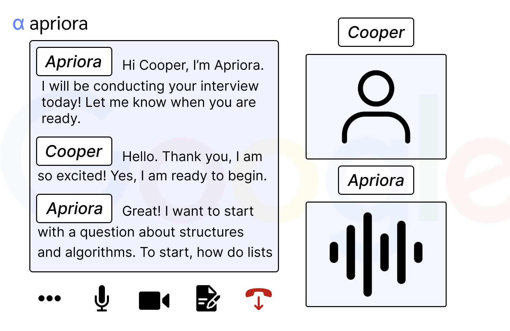

01Role & Team
We designed most of the components together in Figma. My main job was the final pass on the interface: picking colors so the important stuff stood out, fixing spacing, rounding corners, and making sure every screen looked consistent and on-brand.
Basically, I was the last person to touch each screen before we called it done.
02Context & Problem

Apriora uses AI to run behavioral and technical interviews for recruiters. We met with the founders, and their biggest challenge was making an AI interview still feel like talking to a real person.
We wanted the platform to be easy to use, but also to show why Apriora’s approach is different from other AI hiring tools.
03Research

Talking to the founders shaped the whole design. Most AI tools only care about speed, but Apriora also cares about how the candidate feels during the interview.
So we designed for two people: the recruiter, who wants useful results, and the candidate, who should feel comfortable. That affected the layout, the wording and the order of every step.
04Process
We went through four rounds:

Sketches
Everyone sketched layout ideas on their own first.

Lo-fi prototype
Rough wireframes to check the structure.

Hi-fi prototype
Real visuals, branding and clickable interactions.

User testing
Watched people use it and wrote down where they got stuck.
05Solution





Here’s what we ended up with:
- A scheduling page with calm colors, where the important info is easy to spot
- A waiting room that feels familiar, like joining a normal video call
- An interview room with transcripts for both sides and a self-view
- Branding settings, so companies can add their logo and colors and name the AI interviewer
What testing changed
We had people go through the recruiter side, from setting up an interview to reading the results. Some skipped the instructions, some got lost after the interview ended, and most relied on visual cues to figure out what to do next.
People missed instructions and misread labels.
FixClearer labels (“Role” became “Candidate Role”) and tooltips.
People got lost after the interview ended.
FixA cleaner layout and easier navigation.
06Learnings
Working in a team means some of your ideas get changed or cut. That was hard at first, but the final product was better for it.
I also started using Figma to talk through ideas, not just to make mockups. It made it easier to show what I meant and to disagree without it getting personal.